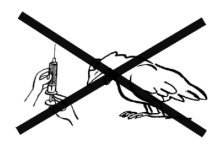
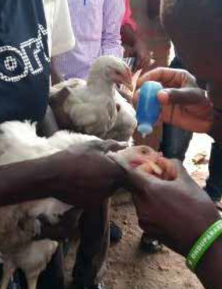
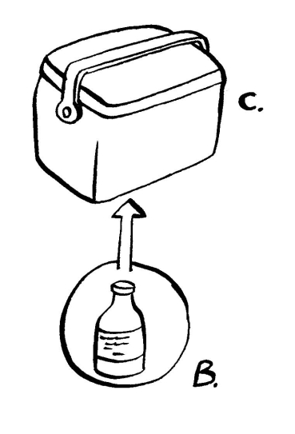
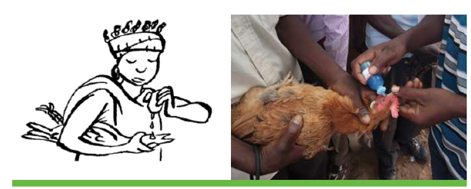

ঔষধ
কিছু রোগ ওষুধের মাধ্যমে নিরাময় করা যেতে পারে। উকুন বা কৃমির মতো পরজীবী রোগগুলি পরজীবী-বিরোধী ওষুধ ব্যবহার করে অথবা তেলে স্নানের মতো সহজ পদ্ধতি প্রয়োগ করে নিরাময় করা যেতে পারে। ডায়রিয়ার কারণী কিছু ব্যাকটেরিয়াজনিত রোগ অ্যান্টিবায়োটিক দিয়ে নিরাময় করা যেতে পারে তবে এটি কেবল একজন পশুচিকিত্সকের তত্ত্বাবধানে করা উচিত! ভাইরাসজনিত রোগের জন্য কোনও চিকিৎসা নেই। তবে ভাইরাসজনিত রোগগুলি প্রায়শই টিকা দেওয়ার মাধ্যমে প্রতিরোধ করা যেতে পারে।
"প্রতিকারের চেয়ে প্রতিরোধই উত্তম" এই পুরনো কথাটি হাঁস-মুরগির রোগ এবং পরজীবীর ক্ষেত্রে সত্য। টিকাদান এবং ভালো পালন পদ্ধতির মাধ্যমে এটি প্রতিরোধ করা সম্ভব।
টিকাদান
- টিকা পাখিদের রোগ থেকে রক্ষা করে এবং রোগ ছড়িয়ে পড়ার আগেই তা করা উচিত।
- এলাকার সবচেয়ে সাধারণ ভাইরাসজনিত রোগ(গুলি) এর বিরুদ্ধে সমস্ত মুরগির টিকা দেওয়া উচিত। গ্রাম পর্যায়ে টিকাদান প্রকল্পগুলিতে নিউক্যাসল ডিজিজ এবং ফাউল পক্স অন্তর্ভুক্ত করা উচিত।
- অন্যান্য ভাইরাল রোগ যেমন গাম্বোরো এবং সংক্রামক ব্রঙ্কাইটিস টিকা দ্বারা আচ্ছাদিত হতে পারে, তবে গ্রাম পর্যায়ে এগুলি প্রায়শই কম গুরুত্বপূর্ণ।
- টিকাদানের মাধ্যমে ফাউল কলেরার মতো ব্যাকটেরিয়াজনিত রোগও প্রতিরোধ করা যেতে পারে।
- হাঁস-মুরগি যখন খুব ছোট থাকে এবং ডিম পাড়া শুরু করার আগেই তাদের টিকা দেওয়া উচিত। টিকা না দেওয়া বেশিরভাগ ছোট পাখি রোগ প্রতিরোধ করতে পারে না এবং প্রায়শই মারা যায়।
- টিকা শুধুমাত্র সুস্থ পাখিদের দেওয়া উচিত। যদি আপনি অসুস্থ পাখিকে টিকা দেন, তাহলে আপনি পাখিটিকে মেরে ফেলতে পারেন।
- টিকার প্রভাব উন্নত করার জন্য, অভ্যন্তরীণ পরজীবীদের বিরুদ্ধে অ্যান্থেলমিন্টিক্স টিকা দেওয়ার দুই সপ্তাহ আগে দেওয়া উচিত।
- টিকাগুলি ঠান্ডা/ঠান্ডা পরিবেশে সঠিকভাবে সংরক্ষণ করা উচিত, সাধারণত ২-৮ ডিগ্রি সেলসিয়াসে।
- পুনর্গঠনের (পাতলা করার) পরপরই (২½ ঘন্টার মধ্যে) টিকা ব্যবহার করা উচিত। টিকা ব্যবহার করার সময় সর্বদা প্রস্তুতকারকের নির্দেশিকা অনুসরণ করুন অথবা নির্দেশনার জন্য একজন পশুচিকিৎসকের সাথে যোগাযোগ করুন।  অসুস্থ পাখিদের টিকা দেবেন না।
টিকাদান পদ্ধতি
পাখিদের টিকা দেওয়ার চারটি মৌলিক উপায় রয়েছে: |পদ্ধতি|বিস্তারিত| |---|--| |চোখের ড্রপ|উগান্ডায় বেশিরভাগ টিকা এইভাবে দেওয়া হয়। কখনও কখনও নাক বা মুখের ড্রপ দিয়ে দেওয়া হয়। চোখের ড্রপ হিসেবে দেওয়া টিকার উদাহরণের মধ্যে রয়েছে নিউক্যাসল রোগ, গাম্বোরো রোগ এবং সংক্রামক ব্রঙ্কাইটিস| |ইনজেকশন| ঘাড়, স্তন বা উরুর পেশীতে ইনজেকশনের মাধ্যমে দেওয়া মুরগির টিকার মধ্যে রয়েছে মারেক'স ডিজিজ ভ্যাকসিন এবং ফাউল টাইফয়েড ভ্যাকসিন। তবে নিবিড় সিস্টেমে রাখা বিদেশী পাখিদের ক্ষেত্রে এগুলি বেশি।| |ত্বক ছিদ্র|এই বিভাগে, উগান্ডায় স্থানীয় মুরগির জন্য আমাদের কাছে শুধুমাত্র ফাউল পক্স ভ্যাকসিন আছে। এটি একটি কাঁটাযুক্ত সুই ব্যবহার করে ডানার জালের ত্বকে ইনজেকশন করা হয়| |মৌখিকভাবে (খাদ্য বা জলে)| চোখের ড্রপ দিয়ে দেওয়া হয় এমন যেকোনো একটি পানিতে দেওয়া যেতে পারে। এই পদ্ধতিটি আবদ্ধ সিস্টেমের জন্য ব্যবহার করা হয়। মুরগি পরিষ্কার করার জন্য, পানীয় জল বা খাবারের সাথে টিকা মেশানো এড়িয়ে চলা উচিত, কারণ সঠিক ডোজ দেওয়া কঠিন। গবেষণায় দেখা গেছে যে, নিউক্যাসল রোগের বিরুদ্ধে সুরক্ষা অত্যন্ত পরিবর্তনশীল, যদি টিকা জল বা খাবারের মাধ্যমে দেওয়া হয়। টিকা সঠিকভাবে কাজ করার জন্য সঠিক ডোজ দেওয়া অপরিহার্য।|

চোখের ড্রপ দিয়ে টিকাদান | 
টিকাদান প্রচারণার সময় একটি শীতল বাক্সে টিকা সংরক্ষণ করুন |
|---|
| |
- জীবন্ত টিকার মাত্রা বেশি হলে বাচ্চা বাচ্চা মারা যেতে পারে, অন্যদিকে খুব কম মাত্রা পর্যাপ্ত সুরক্ষা দেবে না। তাই, টিকা দেওয়ার আগে আরও পরামর্শের জন্য একজন পশুচিকিৎসকের সাথে পরামর্শ করা গুরুত্বপূর্ণ।
- বেশিরভাগ টিকা ৪ থেকে ৮ ডিগ্রি সেলসিয়াস তাপমাত্রায় ফ্রিজে রাখতে হবে এবং কখনও হিমায়িত করা যাবে না।
- মাঠে যাওয়ার সময়, টিকাগুলি একটি ঠান্ডা বাক্সে বা একটি ভেজা কাপড়ে মুড়িয়ে রাখতে হবে, এবং সূর্যের আলোর সংস্পর্শে আসবে না।
- মেয়াদ শেষ হওয়ার পরে টিকা ব্যবহার করা উচিত নয়।
- একবার একটি টিকা খোলা হয়ে গেলে, তা অবিলম্বে ব্যবহার করা উচিত এবং পরের দিন ব্যবহারের জন্য সংরক্ষণ করা উচিত নয়।
দেশি মুরগির টিকাদান কর্মসূচি
উগান্ডায় স্থানীয় মুরগির জন্য কোন টিকাদান কর্মসূচি সুপারিশ করা হয় তার একটি ইঙ্গিত নীচের সারণীতে দেওয়া হয়েছে। প্রধান রোগের প্রাদুর্ভাবের উপর নির্ভর করে স্থানীয় জনগণের সাথে সহযোগিতামূলকভাবে টিকাদানের সঠিক সময় পরিকল্পনা করার পরামর্শ দেওয়া হচ্ছে, উদাহরণস্বরূপ একটি রোগ প্রতিরোধ ক্যালেন্ডার তৈরি করে।
| বয়স (সপ্তাহ) | টিকার ধরণ | প্রশাসনের পথ | ডোজ | মন্তব্য |
|---|
| ৭ দিন | নিউক্যাসল + সংক্রামক ব্রঙ্কাইটিস | চোখের ড্রপ | প্রতি চোখে এক ফোঁটা | খুবই গুরুত্বপূর্ণ |
| ১৪ দিন | গাম্বোরো | চোখের ড্রপ | প্রতি চোখে এক ফোঁটা | ঐচ্ছিক |
| ২১ দিন | নিউক্যাসল + আইবি | চোখের ড্রপ | প্রতি চোখে এক ফোঁটা | ঐচ্ছিক |
| ২৮ দিন | গাম্বোরো | চোখের ড্রপ | প্রতি চোখে এক ফোঁটা | ঐচ্ছিক |
| ৬ষ্ঠ সপ্তাহ | ফাউল পক্স | ডানার জালের ত্বক ছিদ্র | সুচের চোখে টিকার টুকরো, এক ডানা একবার ফুটো করা হয়েছে | খুবই গুরুত্বপূর্ণ |
| ৮ম সপ্তাহ | নিউক্যাসল | চোখের ড্রপ | প্রতি চোখে এক ফোঁটা | ঐচ্ছিক |
| ৫ম মাস | নিউক্যাসল + আইবি | চোখের ড্রপ | প্রতি চোখে এক ফোঁটা | খুবই গুরুত্বপূর্ণ |
| প্রতি ৩ মাস পর পর | নিউক্যাসল | চোখের ড্রপ | প্রতি চোখে এক ফোঁটা | খুবই গুরুত্বপূর্ণ |
চোখের ড্রপ দিয়ে কীভাবে টিকা দেওয়া যায় (নিউক্যাসল রোগের বিরুদ্ধে উদাহরণ)
- উগান্ডায় বর্তমানে প্রায় ১৬টি ND টিকা ব্র্যান্ড ব্যবহার করা হচ্ছে যার মধ্যে রয়েছে Hipraviar-B1/ H120® (ND & IB), Hipraviar-S® (ND), Newcastle Disease Vaccine®, ORNIPEST, ORNIPRIM এবং অন্যান্য। সাধারণত, ND টিকার অনেক ট্রেড নাম রয়েছে এবং নতুন মজুদদারদের আগমনের সাথে সাথে এগুলি পরিবর্তিত হতে থাকে। অতএব, টিকা এবং ডাইলুয়েন্ট কিনতে সাধারণত শুধুমাত্র পাখির সংখ্যার জন্য নিউক্যাসল রোগের টিকা চাওয়া যথেষ্ট।
- টিকা খুব ভোরে দেওয়া উচিত, মুরগির ঘর থেকে পাখি বের করার আগে অথবা যখন স্থানীয় পাখিরা গাছে বিশ্রাম নিয়ে সহজেই ধরা পড়ে তখন।
- টিকা সঠিকভাবে পাতলা করা অত্যন্ত গুরুত্বপূর্ণ। প্রয়োজনীয় তরল পদার্থ টিকার সাথে বিক্রি করা হয় এবং পাতলা করার নির্দেশ দেওয়া হয়। অনুগ্রহ করে সাবধানে এই নির্দেশাবলী অনুসরণ করুন।  চোখের ড্রপ দিন। আই-ড্রপার ব্যবহার করার সময়, এটিকে উল্লম্ব অবস্থানে ধরে রাখুন। ড্রপারটি উল্লম্ব অবস্থানে ধরে রাখলে যে ড্রপ তৈরি হয় তার আকার অনুসারে এগুলি ক্যালিব্রেট করা হয়।
- টিকা দেওয়ার পরপরই রোগ প্রতিরোধ ক্ষমতা তৈরি হয় না। পূর্ণ রোগ প্রতিরোধ ক্ষমতা তৈরি হতে এক থেকে দুই সপ্তাহ সময় লাগে।
- প্রাদুর্ভাব দেখা দেওয়ার কমপক্ষে এক মাস আগে মুরগির টিকা দেওয়া উচিত: স্থানীয় গ্রামের হাঁস-মুরগির খামারিদের জিজ্ঞাসা করুন কখন ND প্রাদুর্ভাব সবচেয়ে বেশি দেখা যায় এবং সহযোগিতামূলক ভিত্তিতে টিকাদান প্রচারণার পরিকল্পনা করুন (যেমন, অংশগ্রহণমূলক রোগের ক্যালেন্ডার, অংশ ১ দেখুন)।
- মুরগির পুনরায় টিকা না নিলে রোগ প্রতিরোধ ক্ষমতা কমে যাবে। বছরে কমপক্ষে তিনবার মুরগির টিকা দেওয়া ভালো।
- প্রাথমিক টিকা দেওয়ার ২-৪ সপ্তাহ পরে মুরগিকে বুস্টার ডোজ দেওয়া উচিত, ৩ মাস অন্তর পুনরায় টিকা দেওয়া উচিত।
- গ্রামের মুরগির পালকে ৩-৪ মাস অন্তর টিকা দিলে নতুন ডিম ফোটা ছানাদের সুরক্ষাও পাওয়া যাবে।
ফাউল পক্সের টিকা দেওয়ার পদ্ধতি:
- উগান্ডায় বর্তমানে ব্যবহৃত ফাউল পক্স টিকার মধ্যে রয়েছে হিপ্রাপক্স®, ফাউল পক্স ভ্যাকসিন® এবং অন্যান্য। ব্র্যান্ডগুলি সময়ের সাথে সাথে পরিবর্তন হয়, কিন্তু কেনার সময়, ফাউল পক্স টিকা চাইতে হয়। টিকাটি তরলীকরণের জন্য জল এবং কাঁটাযুক্ত সুইয়ের সাথে বিক্রি করা হয়।
- বাজারে পাওয়া সাধারণ শিশিগুলি ৫০০ এবং ১০০০ মুরগির জন্য।
- টিকা পাতলা করে মুরগিকে টিকা দেওয়ার জন্য নিম্নলিখিত পদ্ধতি অনুসরণ করতে হবে:
- একটি পরিষ্কার সিরিঞ্জে তরলীকরণের জন্য ২০ মিলি জল নিন (চিত্র ৬২)।
- রাবার ক্যাপ ভেদ করে বোতলের কঠিন টিকায় পানি ঢোকান।
- একবার দ্রবীভূত হয়ে গেলে, সিরিঞ্জ দিয়ে সমস্ত উপাদান টেনে নিন এবং পুঙ্খানুপুঙ্খভাবে মিশ্রিত করুন।
- মিশ্রণটি একটি পরিষ্কার কাপে ঢেলে বরফ দিয়ে ঠান্ডা বাক্সে রাখুন।
- মুরগি ধরে রাখা একজন সহকারীর সাহায্যে, ডানাটি প্রসারিত করুন, কাঁটাযুক্ত সূঁচের চোখগুলি ভ্যাকসিনের মধ্যে ডুবিয়ে দিন এবং ডানার জাল ভেদ করুন, পালক, হাড় এবং বৃহৎ রক্তনালীগুলি এড়াতে যত্ন নিন।
- পাখিটিকে নামিয়ে দাও, আরেকটি বের করো, একইভাবে ছিদ্র করো, যতক্ষণ না সব পাখি ঢেকে যায়।
- টিকা কার্যকর কিনা তা দেখার জন্য তিন দিন পর কিছু নির্বাচিত পাখির ইনজেকশন স্থান পরীক্ষা করুন।
- ভালোভাবে করা হলে, ইনজেকশনের স্থানে সামান্য ফোলাভাব দেখা দেবে কিন্তু সঠিকভাবে না করা হলে ফোলাভাব দেখা দেবে না।
- মুরগির জীবদ্দশায় একটি ভালোভাবে করা টিকাই যথেষ্ট। আপনি কেবল ছোট বা নতুন মুরগির জন্য বারবার টিকা দেবেন।
টিকাদানের খরচ
উগান্ডায় ভ্যাকসিনের দাম অবস্থানের উপর নির্ভর করে ব্যাপকভাবে পরিবর্তিত হয়। দেশের অন্যান্য অঞ্চলের তুলনায় মধ্য উগান্ডায় ভ্যাকসিনের দাম কম। এর কারণ কাম্পালার শহরের অবস্থা অনেক পশুচিকিৎসা মজুদদারদের সাথে সম্পর্কিত এবং ভ্যাকসিনের হিমাগারের জন্য তুলনামূলকভাবে নির্ভরযোগ্য বিদ্যুৎ। এছাড়াও, মধ্য অঞ্চলে বৃহৎ বাণিজ্যিক পোল্ট্রি খামার রয়েছে যেখানে বেশিরভাগ পোল্ট্রি টিকা এবং ওষুধ ব্যবহার করা হয়। উদাহরণস্বরূপ, কাম্পালায় নিউক্যাসল রোগের ভ্যাকসিনের ৫০০ ডোজ ভায়ালের দাম গড়ে ৭০০০ টাকা কিন্তু আরুয়ায় দাম ১৫,০০০ টাকা। ফাউল পক্স ভ্যাকসিনের একই ডোজ ভায়ালের দাম কাম্পালায় ৯০০০ টাকা এবং আরুয়ায় ১৮০০০ টাকা। এই ভ্যাকসিনগুলি তরল তরল এবং চোখের ড্রপার বা সূঁচযুক্ত সিরিঞ্জের সাথে বিক্রি করা হয়। দোকান থেকে খামারে ভ্যাকসিন বহন করার জন্য আইস প্যাকযুক্ত ভ্যাকসিন ক্যারিয়ার ব্যবহার করা হয়। ভ্যাকসিন কিনছেন এমন ব্যক্তিকে তার নিজস্ব ভ্যাকসিন ক্যারিয়ার বহন করতে হবে। ভ্যাকসিনেটরদের মধ্যে টিকা দেওয়ার জন্য শ্রমিক খরচ ভিন্ন হয়। এটি ৫০০ টাকা থেকে শুরু করে ৫০০ টাকা পর্যন্ত। উত্তর উগান্ডার কিছু গ্রামে প্রতি মুরগির দাম ৫০ থেকে ৩০০ টাকা।